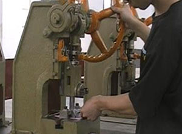
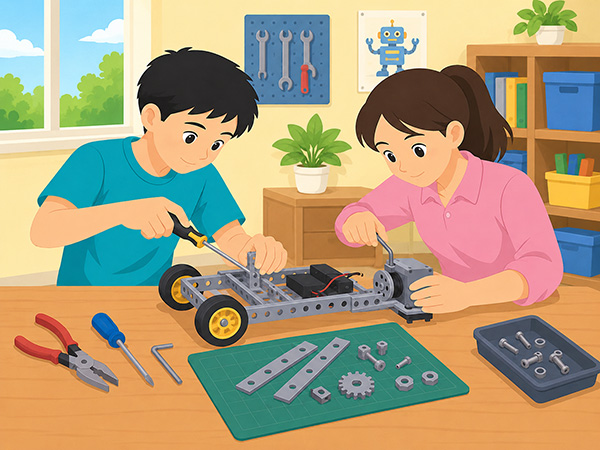
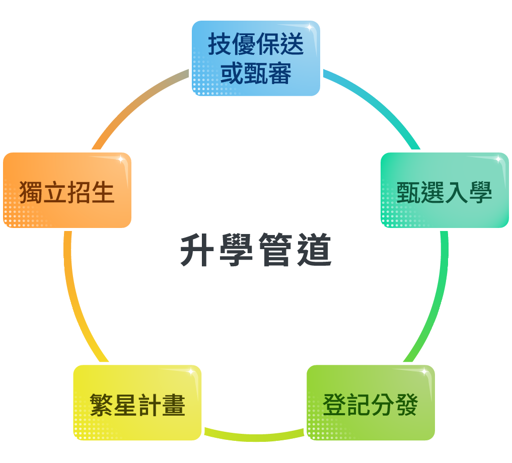
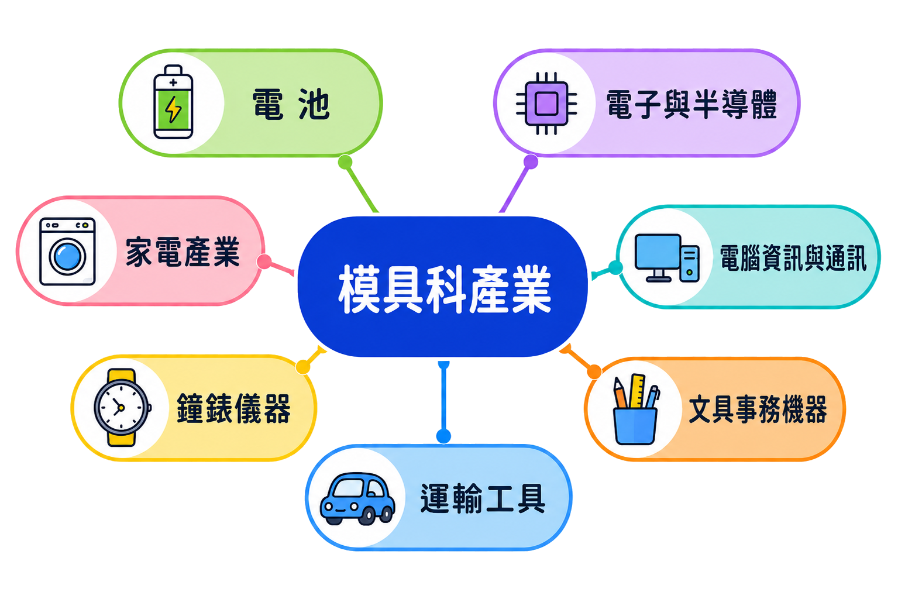

模具與人類生活密切相關，從飲料瓶、手錶、家電到電腦，甚至到大型交通工具、工業設備等，都是從模具製作而來。
凡是可以定型並大量複製的工具，就屬於模具的範疇。相較於模型，在標準化的生產流程下，模具使零組件能快速而大量的被製造，大幅降低製造成本，且讓產品規格統一化。
用旋轉的銑刀，對被固定的工件進行銑削加工。能加工比較複雜的型面，效率較車床高。

常見的沖壓製程包含沖切、彎曲及引伸。利用金屬本身的可塑性，在強壓之下，可以塑造成模具設計的形狀。
模具科主要分成模具設計與模具製造兩大類別。以下將說明模具科所需具備的知識、技能和能力。
模具科的學生需要學習以下專業知識：
模具科學生藉由校內實習課程培養以下專業技能：
利用電熱器將塑膠原料融化，再將融化的塑膠射入預備好的模子內，經過冷卻後，模子打開即為成型的產品。
模具科學生須具備以下專業能力：
若你／妳對於下列活動或事務有高度興趣，可考慮進入模具科學習。

想要進入模具科的學生，建議具備以下的人格特質：
模具科學生只要按部就班照著學校的課程安排，認真把握實習課程的練習機會，想要取得相關證照並非難事。模具科學生可參加全國技術士技能檢定，以考取模具職類為主。模具科相關檢定整理如下：
模具科學生除了基礎技能的考照以外，若想提升個人就業競爭力，則需要額外充實更多元的技能，如機電整合、電腦程式設計、機械維修、電路控制與光電等。
如果想朝技職選手之路發展，可參加行政院勞工委員會中部辦公室所舉辦的全國技能競賽或國際技能競賽－模具、綜合機械、機具控制等職類，也可參加由教育部主辦之全國高級中等學校工業類科學生技藝競賽－模具職種，以及全國高職學生實務專題製作競賽。
下面列舉全臺各免試就學區設有此職科的學校。

分為技優保送或甄審、甄選入學、登記分發、繁星計畫及獨立招生，共六種管道。學生若是不想循傳統考試升學之路，可以選擇參加全國技能競賽，或者成為國際技能競賽的國手，進而取得技優保送或甄審的資格。
模具科學生若想繼續鑽研模具的專業技術，可以選擇就讀模具工程系，該系因應現今產業趨勢可分為三組：
除此之外，畢業生也可以選擇朝機械工程、材料工程學類的相關科系繼續深造。大專院校的相關科系，整理如下：
學生畢業後可直接進入就業市場，可從事的行業主要以模具製造與設計為主，可擔任模具師傅或工程師。
繼續升學者，由於深造的領域多元化，因此學生就業面向，可包括半導體產業、電子零組件製造業、電腦手機業、重機械、光電、資訊服務業等。如果以高級技術人員為例，可投入半導體產業擔任模具設計師。

代表人物：
郭台銘生於1950年，從小家境貧寒，半工半讀完成學業。隨後運用母親標會來的十萬元，打造今日市值千億的鴻海集團，也讓他躍上臺灣科技首富之位。創業之初由於規模太小遭逢困境，但他憑著毅力與決心一肩攬下，堅持掌握技術，自己做模具來控制品質、並使它標準化生產。他說，一天不自我累積技術，便一天要受制於人。擁有寬宏的格局以及不断自我精進的動力，儼然成為臺灣企業家的最佳典範。
模具公會理事長曾源坤畢生致力於提升模具業的形象與市場，認為模具工法已經有很大的更新，且在業者導入自動化機械後，模具業不該再被視為是「黑手」工業。綜觀國際市場，模具業是幫助國內企業登上世界舞臺的關鍵角色。曾理事長亦指出業者除了強化個人技術之外，行銷整合策略與政府培訓方案，皆是促使模具業國際化的要素。
隨著兩岸互動愈來愈頻繁，臺灣許多的公司及工廠也已紛紛遷至大陸設廠，技術及資金轉移到大陸去，現在全世界已是地球村了，工作機會在哪裡，人才就往哪裡去。為符合時代的需求及產業的需求，除了具備模具的技術能力外，應該更加努力充實各項相關的專業知能與能力，包括需了解當地的語言、歷史文化、風俗習慣、法律制度等等。唯增加自己的附加價值，才能禁得起時代的考驗。
「黑手」是過去大家對模具科的印象。2007年，南港高工成立了「黑手黨」，結合模具科畢業校友與曾經參加過技藝競賽的歷屆選手，這些前輩畢業後個個成就非凡，有工程師、廠長、甚至是大老闆，說明了靠著一技之長也能開創成功的人生。